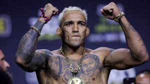
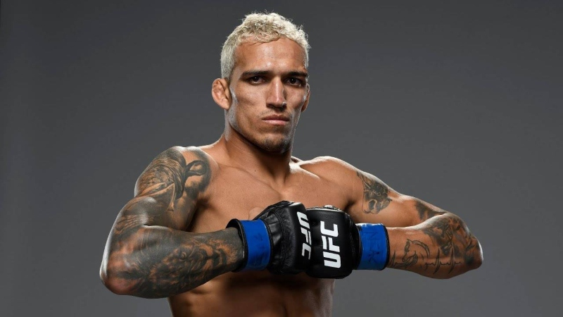

.jpeg)

falar sobre o charles do broxxCharles "do Bronx" Oliveira é um dos maiores fenômenos do MMA mundial, natural do Guarujá (SP). Ele fez história como ex-campeão peso-leve e consolidou seu legado ao conquistar o cinturão simbólico "BMF" (Baddest Motherfucker). Ele lidera isoladamente o recorde histórico de mais finalizações na organização.
Charles Oliveira da Silva, mais conhecido como Charles do Bronxs, é um lutador brasileiro de artes marciais mistas e faixa preta de 4º grau de jiu-jitsu brasileiro.
charles do bronxx é um dos melhores lutadores
ele foi campeao bmf da ufc
Estima-se que a fortuna de Charles "do Bronx" gire em torno de US$ 5 milhões a US$ 8 milhões (aproximadamente R$ 27 milhões a R$ 43 milhões), acumulada ao longo de sua vitoriosa carreira no UFC, que inclui bolsas de lutas, bônus de performance, participações em pay-per-view e patrocínios.
Charles "Do Bronx" Oliveira da Silva é um lutador brasileiro de MMA, ex-campeão dos pesos-leves e atual detentor do cinturão simbólico BMF (Baddest Mother***) do UFC.
Ele é o maior finalizador da história da organização, superando graves problemas de saúde na infância para se tornar uma lenda do esporte
Estilo: Faixa preta 4º grau em Jiu-Jitsu Brasileiro
Um dos lutadores mais ativos e perigosos da divisão, com vitórias dominantes construídas ao longo de anos de evolução na trocação e genialidade no chão.
É o recordista absoluto de finalizações na história do UFC (17)